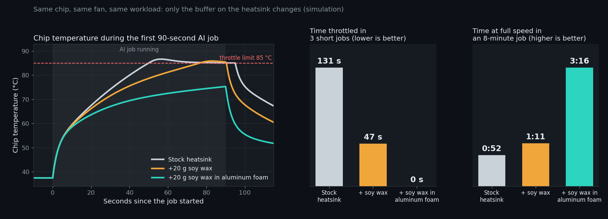

9 °C
lower peak chip temperature with wax in aluminum foam: 77.8 °C against 86.7 °C for the stock heatsink, over three 90-second AI jobs.
Simulation prototype
In this simulation, 20 g of soy wax cast into aluminum foam lowered a small AI chip's peak temperature by 9 °C and removed all throttling in three AI jobs. The wax melts at about 49 °C, soaks up the burst of heat, and hands it back to the fan between jobs.
Narrated demo, 2:09. All results come from a physics simulation.
9 °C
lower peak chip temperature with wax in aluminum foam: 77.8 °C against 86.7 °C for the stock heatsink, over three 90-second AI jobs.
0 s
of throttling in those three jobs, against 131 s for the stock heatsink. Every job runs at full speed.
3.8×
longer at full speed in an 8-minute job: 3:16 against 0:52. The job also finishes 38 s sooner.
64 %
less throttling even with a simple 20 g soy wax pack (131 s down to 47 s).
Each build runs three 90-second AI jobs seven minutes apart, then an 8-minute job. Only the buffer on the heatsink changes.

| Build | Time throttled 3 short jobs | Time at full speed 8-minute job | Time to finish 8-minute job |
|---|---|---|---|
| A · Stock heatsink | 131 s | 0:52 | 9:16 |
| B · +20 g soy wax pack | 47 s | 1:11 | 8:53 |
| C · +20 g soy wax in aluminum foam | 0 s | 3:16 | 8:38 |
Aluminum foam is a metal sponge: a web of thin aluminum struts that is about 90 % open space. Melted wax poured into it fills the pores. The metal web then carries heat deep into the wax, so the whole pack melts and absorbs heat quickly.
Wax on its own conducts heat about as poorly as solid plastic (~0.17 W/m·K). In published tests, wax-filled aluminum foam conducts 3–7 W/m·K while still being mostly wax. The model uses 3 W/m·K, the low end of that range.
These results come from a physics model, not a lab measurement. Material values are taken from published measurements, listed below. The README documents every assumption and the model's limits.
Next step: a bench rig with a heater, thermocouples and the same fan, run with and without the wax pack. Read the full assumptions on GitHub.
git clone https://github.com/AarushAgarwal-dev/soywax-thermal-buffer
cd soywax-thermal-buffer
pip install numpy matplotlib edge-tts
python soywax_sim.py # results table and charts in out/
python make_demo_video.py # narrated video (needs ffmpeg)Try other scenarios with flags such as --wax-g 40, --t-amb 35 or --k-foam 5.
Can soy wax smooth out heat spikes in compact AI hardware? This simulation compares three builds of a small AI chip with a fan heatsink: the stock heatsink, the same heatsink with 20 grams of soy wax, and that wax cast into aluminum foam. Each build runs three short AI jobs, then a long one.
Each card is one build. All three start at the same 37 degrees Celsius, with the wax solid.
Job one starts, and the chip jumps from 4 to 30 watts.
The wax starts melting near 49 degrees, and soaks up heat. In aluminum foam, the chip warms much more slowly.
The stock heatsink reaches the 85 degree limit, so its chip has to slow down.
With wax in aluminum foam, the chip stays at or below 76 degrees, and at full speed.
Job two. Wax in aluminum foam holds full speed again, peaking at 77 degrees.
Over the three short jobs, the stock heatsink spent 131 seconds throttled. The simple wax pack, 47 seconds. The foam build, none.
Now, an 8 minute job at full load.
The stock heatsink holds full speed for just 52 seconds. The simple wax pack holds it for 71 seconds.
Wax in aluminum foam holds full speed for 3 minutes and 16 seconds, 3.8 times longer than the stock heatsink.
The scorecard. With 20 grams of soy wax cast into aluminum foam, the chip peaked 9 degrees cooler in the short jobs. In those jobs it never throttled, against 131 seconds for the stock heatsink, and it held full speed 3.8 times longer in the long job. Even the simple wax pack cut throttling by 64 percent. It is passive, with nothing to power or control. These are simulation results, so the next step is a bench test.